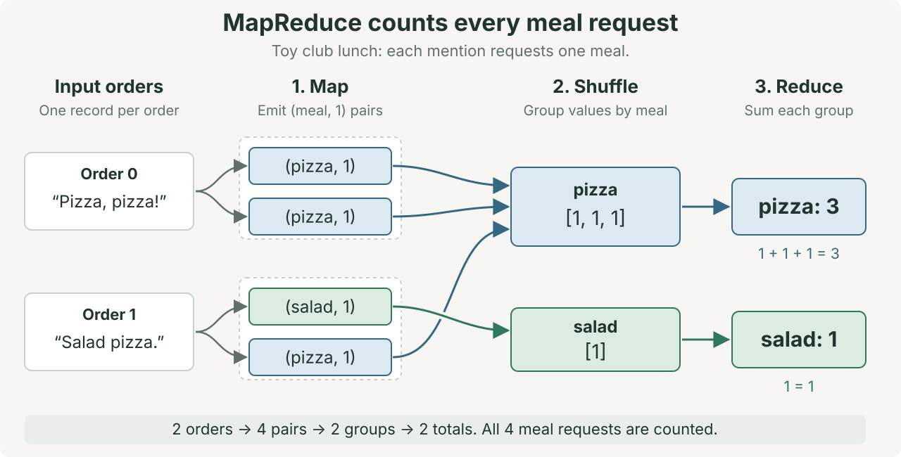

MapReduce and distributed execution
Class begins with Quiz 9, which takes 10 minutes. It covers lecture 12 on retrieval-augmented generation (RAG).
Sections 1–16 follow the slide deck in order, using the same titles and examples. Each section links to its slide and explains the diagram’s changes. An animation step within a slide is called a build. Read the section before advancing the slide. Section 6 includes a code trace and an expandable Python companion.
1 · When one machine cannot finish in time
Two lunch orders need only a short Python loop. Now imagine a food-delivery service preparing meal-demand reports across many restaurants. Reading and processing its stored records can take longer than the time available for a report.
Suppose a report must scan 10 TB of records within 10 minutes. One machine reads 2 GB/s.
Even if counting adds no time, reading the input once takes 5,000 seconds, or about 85 minutes. This machine cannot meet the reporting window under those assumptions.
With balanced input and independent disks, 100 machines reading at 2 GB/s each could scan their shares in 50 seconds. Each machine reads 100 GB. The slide draws eight of these 100 workers. That is about 1 minute, before coordination, data transfer, and processing costs.
More machines can share the work. They also create three coordination problems:
- Assign the input: give each worker a portion of the records to process.
- Combine the results: bring every contribution for the same meal together before calculating its total.
- Recover from failure: retry failed work without losing input or counting a retried contribution twice.
You already use SQL GROUP BY to compute totals. Here, orders can be spread across machines, but each meal still needs one complete total.
MapReduce lets you write the counting logic while its framework coordinates distributed execution. This separation is the central motivation of Google’s paper. We will use two orders so every contribution remains visible.
Use one machine when it meets the workload’s needs. Distribution adds overhead, so a larger input alone does not establish a speedup.
A fictional classroom investigation
Maya is collecting lunch orders for a student club. Noor offers to read one group’s order while Maya reads the other. They need one total for each meal before placing the club’s order.
| Input record | Lunch order |
|---|---|
| Group 0 | “Pizza, pizza!” |
| Group 1 | “Salad pizza.” |
Each word requests one meal. This toy format uses meal names only, with one word per meal type.
Noor asks: If we read different orders, how do we bring all the pizza requests together?
Goal: Trace map, shuffle, and reduce. Explain how partitioning, local combination, and task retries preserve the complete result.
Today’s reading is Google’s MapReduce paper, linked above. Engine-specific readings and demonstrations are in lecture 13B.
Terms with dotted underlines, such as this one, have definitions. Hover over a term or tap it to show its definition below the sentence.
Predict before sharing the work
Maya reads only group 0’s order. Noor reads only group 1’s order. Can either person know the club’s pizza total from that order alone?
Check your explanation
No. Each person sees only part of the requests. The final pizza count needs contributions from both orders.
First, choose how to assign data to partitions. Then trace map → shuffle → reduce, local combination, skew, and recovery. Lab 11 implements the pattern in one Python process. Its engine exercises are optional.
More context: reading, memory, and recovery costs
The 10 TB report also illustrates memory and recovery concerns. Its 10-minute window explains why the one-machine scan is insufficient. The table separates reading, memory, and recovery concerns. These estimates do not specify a course-project requirement or guarantee a speedup.
More machines can share the reading and processing work
| Resource | One machine | 10 TB job needs | The distributed answer |
|---|---|---|---|
| Disk read | ~2 GB/s sequential | ~85 min just to read once2 | 100 machines read their own 100 GB in ~1 min |
| Memory | hundreds of GB | the working set, or data needed during processing, may exceed available memory. The engine must then process smaller pieces or store intermediate data on disk. | Give each machine a smaller share. Uneven work, called skew, can still leave one machine without enough memory. |
| Failure | without a recovery mechanism, a crash can force the whole job to restart | more machines and longer jobs increase the chance of a failure3 | the framework retries failed tasks and reconstructs lost intermediate results instead of restarting all completed work |
Read the final build: one worker loses its output. More capacity does not solve this loss. The framework must reconstruct the missing contribution without counting it twice.
Sharing work raises the next question: which part of the data should each worker process?
2 · Partitioning
Partitioning divides records into subsets. The system assigns these partitions to workers for processing. A worker is a program process that runs assigned computation. One worker can process several partitions.
A key is the record value used for routing, such as a person’s name in the next example.
Consider sorting mail into destination trays. Each address selects a tray, regardless of the sending office. Here, the key acts like the address, and the partition acts like the tray. The routing rule selects a partition. A worker processes that partition’s records.
The analogy explains placement. It does not guarantee equal work or create spare copies of the data. Replication keeps extra copies. Partitioning divides the collection into different subsets.
Read the slide: the names first appear together, then move into four partitions. A lookup for kim contacts its assigned partition. The next slide explains the rule that selects this destination.
Keep two divisions of a MapReduce job separate. Input splits assign original records to map tasks. Intermediate partitions assign the pairs produced by map to reduce tasks. Both divide work, but they divide data at different points.
A task is a unit of assigned computation. A partition is a data subset, not a permanent machine identity.
3 · Hash routing
In hash(key) % n, n is the number of partitions. A hash function converts the key into an integer. The % operator takes the remainder after division by n, selecting a partition numbered from 0 to n - 1. Here, owner means the selected partition.
The slide uses these twelve keys: ada, ben, cyd, dee, eli, fay, gus, ivy, jon, kim, lee, mia. Keep them fixed while comparing the routing rules.
The teaching hash adds the numeric character codes in a name. For kim, that is 107 + 105 + 109 = 321. With four partitions, 321 % 4 = 1. The name goes to partition P1.
A point query asks for one exact key. A lookup for kim computes the same destination and contacts P1.
A range query asks for keys between two bounds. To find names from dee through fay, inspect every hash partition. The hash does not keep neighboring names together.
Read the builds: start with the names, assign their hash partitions, locate kim, then inspect the range query. A good hash can spread distinct keys. It cannot divide repeated occurrences of one key across different destinations under this rule.
This transparent character-sum hash explains the mechanism. It is a teaching choice, not a recommended production hash.
4 · Range routing
Range partitioning assigns neighboring keys to the same interval. The slide uses four intervals: P0: a–c, P1: d–f, P2: g–j, and P3: k–z.
The name kim belongs to P3, so its point lookup still contacts one partition. The range from dee through fay lies entirely in P1. This query contacts one partition instead of all four hash partitions.
Read the comparison: both rules can locate one known key. Range partitioning also preserves alphabetical neighborhoods. Its split points can still create uneven work when some intervals receive more records or requests.
| Hash partitioning | Range partitioning | |
|---|---|---|
| Rule | owner = hash(key) % n | P0: a–c; P1: d–f; P2: g–j; P3: k–z |
| Strength | A good hash distributes distinct keys across partitions. The routing rule is simple to calculate.4 | A range query contacts partitions whose key intervals overlap the requested range. Neighboring keys stay together. |
| Weakness | Without extra metadata, a range query must check every partition. | Split-point selection affects balance. A frequently accessed range can overload one machine.5 |
| Related examples | Lab 11’s shuffle uses a hash to select a partition. A hash join also uses hashing to group equal keys in one bucket. | Lab 8’s folders, such as month=12/, group equal month values. B+ tree leaves illustrate sorted key intervals. |
This example uses twelve names as keys. The point query asks for kim. The range query asks for names from dee through fay in alphabetical order. Load the keys. Run each query on both layouts. Count the partitions contacted.
In this example, a point query routes to one partition with either rule. A range query benefits from range partitioning because adjacent keys are stored together. Hash partitioning requires checking every partition for keys in that range.
We now have rules for placing data. Next, define the computation that each input record needs.
5 · Map is local computation
Return to the fictional lunch orders. Slide 5 starts with only group 0’s order, “Pizza, pizza!”. Predict its map output before looking at the pair labels.
The map function reads one order and emits one (meal, 1) pair for each requested meal. The key is the meal name. The value, 1, means one request. The function uses lowercase letters and treats punctuation as separators.
| Input to map | Output from map |
|---|---|
“Pizza, pizza!” | (pizza, 1), (pizza, 1) |
“Salad pizza.” | (salad, 1), (pizza, 1) |
Each map call needs only its own order, so the calls can run independently. The two pizza requests in group 0 remain two pairs. We now have four pairs, still separated by their input orders.
Read the three builds: one input order becomes two lowercase occurrences, then two (pizza, 1) pairs. Equal text does not mean the requests are duplicates to discard. A set would lose one requested pizza.
The second table row prepares the next slide. Group 1 adds one salad request and one pizza request.
6 · MapReduce: map, shuffle, reduce
MapReduce organizes this count into three operations. Map transforms each input record into pairs. Shuffle groups the pairs by key. Reduce processes each group to produce its result. In this example, reduction adds counts.

Shuffle: bring requests for the same meal together
The shuffle collects the map outputs and groups their values by key. All pizza values join one group, including the value from group 1. The salad value joins a separate group.
| Key | Values after shuffle |
|---|---|
pizza | [1, 1, 1] |
salad | [1] |
The grouping has changed from which order supplied the request to which meal the request names. The shuffle keeps all four values. When map outputs are on different machines, this step can require network transfers.
Reduce: calculate one total for each meal
The reduce function receives one key and all values grouped under it. Our reduce function adds those values and emits the meal’s total.
| Input to reduce | Output from reduce |
|---|---|
pizza, [1, 1, 1] | (pizza, 3) |
salad, [1] | (salad, 1) |
Maya can now order three pizzas and one salad. Map produced individual requests. Shuffle grouped matching meal names. Reduce calculated each group’s total.
You write the functions. The framework connects their work.
You write the map and reduce functions. The MapReduce framework is the software that coordinates the job. It assigns input records, runs the functions, groups intermediate values, and retries failed work. A worker is a program process that runs assigned computation. Assigning records to workers happens before those workers apply the map function to their records.
Map and reduce are computation roles. A single process can demonstrate both, as Lab 11 does. A cluster is a group of machines working together. On a cluster, the framework schedules those computations across worker processes.
General function signatures and another word-count input
map(record) → zero or more (key, value) pairs process each input record
shuffle → group matching keys by destination transfer and group intermediate data
reduce(key, values) → zero or more output values process that key’s values
word count: map: "the log the tree" → (the,1)(log,1)(the,1)(tree,1)
shuffle: all pairs with key "the" reach the same reducer
reduce: the,[1,1,1,…] → (the, total)10Read the five builds: two orders produce four occurrence pairs. Shuffle gathers values by meal. Reduce produces pizza = 3 and salad = 1. The final build separates your map and reduce functions from the runtime’s assignment, scheduling, and shuffle work.
Trace the same grouping across partition dictionaries
Return to the original two orders. The Python companion below uses one dictionary for all groups. Lab 11 adds a routing rule and several partition dictionaries. Follow the same four pairs through the code below.
The code stores groups in partitions, which are subsets of the intermediate data. A routing rule selects a partition for each key. Each partition contains a separate list of values for each key assigned to it. The hash and range slides explained how such rules select destinations.
Worked result: Pizza, pizza! and Salad pizza. emit four pairs. Shuffle groups pizza: [1,1,1] and salad: [1]. Reduce produces (pizza, 3) and (salad, 1).
Enable JavaScript to step through the code and intermediate state.
Lab connection: Lab 11’s graded Part A runs in one Python process. Its mapper must emit one pair per occurrence. Its shuffle must retain every value and group matching keys. Its reducer adds each group’s values.
On a cluster, workers must use the same partition rule so equal keys reach the same destination. Python can choose a different string-hash seed for each process. A seed configures the hash calculation. Lab 11 avoids this issue by running its graded implementation in one process.
Python companion: run the same three operations
This program implements the three operations shown in the diagram. It processes all stages sequentially in one Python process. Each print statement shows the output passed to the next stage.
Download mapreduce_example.py. Run this command in the folder where you saved the file:
python3 mapreduce_example.py"""MapReduce teaching simulation in one process, without distributed execution."""
import re
def map_order(order):
"""Emit one pair for each requested meal, including repeats."""
pairs = []
for meal in re.findall(r"[a-z]+", order.lower()):
pairs.append((meal, 1))
return pairs
def shuffle_pairs(pairs):
"""Collect all values for each meal in one list."""
groups = {}
for meal, value in pairs:
if meal not in groups:
groups[meal] = []
groups[meal].append(value)
return groups
def reduce_meal(meal, values):
"""Add the values for one meal and return its total."""
return (meal, sum(values))
def main():
orders = ["Pizza, pizza!", "Salad pizza."]
mapped = []
for order in orders:
mapped.extend(map_order(order))
print("Map output:", mapped)
grouped = shuffle_pairs(mapped)
print("Shuffle output:", grouped)
totals = []
for meal, values in grouped.items():
totals.append(reduce_meal(meal, values))
print("Reduce output:", totals)
if __name__ == "__main__":
main()Compare each printed result with the diagram
Map output: [('pizza', 1), ('pizza', 1), ('salad', 1), ('pizza', 1)]
Shuffle output: {'pizza': [1, 1, 1], 'salad': [1]}
Reduce output: [('pizza', 3), ('salad', 1)]mapped holds four separate request pairs. grouped holds two meal names, each with its own list of values. totals holds the two results. The function shuffle_pairs appends each value, so repeated requests remain in the lists.
The code demonstrates the counting contract in one process. The next slide shows the files and network transfers that a distributed implementation adds.
7 · Shuffle moves files before reduce
The Python companion groups pairs in memory. Across machines, the framework must move those pairs to the workers that run reduce tasks.
A map task processes an assigned portion of the input. A reduce task processes a destination partition, which can contain several different keys.
In the original MapReduce design, map workers write intermediate data to local disk, separated by reducer destination. The coordinator, called the master on the slide, records where those outputs are available. [10]
Read the labels: M0 processes order 0, and M1 processes order 1. This toy assigns one order per map task. Reduce task R0 handles partition P0’s pizza group. R1 handles partition P1’s salad group.
The slide label M0 → R0 names M0’s local output region destined for R0. It contains two pizza values. M0’s region for R1 is empty. M1 has one value for each reducer.
The master sends file locations to reducers. The meal pairs do not pass through the master. Reducers fetch the actual data from the map workers. The diagram’s arrows show that data movement after the fetch requests.

- Partition: assign each intermediate pair to its reducer destination using the key.
- Transfer: fetch that destination’s data from the completed map tasks.
- Group: bring equal keys together. In these implementations, sorting supports the grouping.
- Reduce: pass one key and its grouped values to the reduce function.
Apache Hadoop implements the same broad structure. Its reducer fetches map output, merges sorted records, and calls reduce for each group. Fetching and sorting can overlap. The value iterator lets reduce process a large group without creating one Python list. [21]
For our pizza total, the destination needs [1, 1] from M0 and [1] from M1. Neither map task alone supplies the complete result.
Partitioning selects the destination. Grouping separates keys within that destination. Two different keys can share a partition, and one worker can execute several tasks.
Moving every raw pair can cost time. The next slide tests whether local aggregation can reduce that traffic without changing the answer.
8 · Optional combiners preserve contribution weights
M0 emits two (pizza, 1) pairs. Could it send (pizza, 2) instead? For an integer count, yes.
A combiner performs an optional local aggregation before the shuffle. It can reduce network traffic while preserving the final result. It does not replace the reducer’s complete group. [20]
| Map task | Raw output | After local addition |
|---|---|---|
| M0 | (pizza, 1), (pizza, 1) | (pizza, 2) |
| M1 | (salad, 1), (pizza, 1) | (salad, 1), (pizza, 1) |
Three pairs now represent four requests. The pizza reducer adds 2 + 1 = 3. The salad reducer returns 1. Sending fewer pairs has preserved every request’s contribution.
The answer must remain correct when the combiner is omitted or applied repeatedly to partial results. Integer addition is associative and commutative: regrouping or reordering the additions preserves the result. [22]
Lab boundary: the graded mapper still emits one pair per occurrence. A combiner is an optional extension, with separate local aggregation after mapping.
Read the builds: four raw pairs become three partial-count pairs, then the reducer calculates the final totals. Fewer pairs still represent four requested meals. This is a pair-count comparison, not a measured speedup.
Local addition works for counts. The next slide asks what information an average must retain.
9 · Preserve sum and count
This is a separate toy example. We want the average delivery time for three deliveries, rather than a meal count.
First build: M0 holds delivery times of 10 and 10 minutes. M1 holds one delivery time of 40 minutes. The groups have unequal sizes.
| Input portion | Delivery times | Local average |
|---|---|---|
| Map task M0 | 10 min, 10 min | 10 min |
| Map task M1 | 40 min | 40 min |
Would averaging the two local averages give each delivery equal weight?
Reveal the incorrect average
No. (10 + 40) / 2 = 25 minutes gives each map task equal weight. The single-delivery group receives as much weight as the two-delivery group.
Third build: retain both total time and delivery count. A local average alone loses the group size needed for correct weighting.
Use one key, delivery_time, for all deliveries. Each map output carries a (sum, count) value, initially (time, 1). A combiner adds the two fields separately and returns the same value format.
| Input portion | Total time | Delivery count | Safe summary: (sum, count) |
|---|---|---|---|
| Map task M0 | 20 min | 2 | (20, 2) |
| Map task M1 | 40 min | 1 | (40, 1) |
Add the summaries: (20 + 40, 2 + 1) = (60, 3). The merged state represents 60 total minutes across three deliveries.
Fourth build: the final reducer divides total time by total count. 60 / 3 = 20 minutes is the correct average.
This format also works when local combination is skipped or repeated. The reducer merges every (sum, count) value, then divides once. Keep enough information to combine correctly.
10 · Skew creates idle time
Correct grouping does not guarantee balanced work. Skew means the work is distributed unevenly. One frequent key can send many records to one partition, leaving other workers waiting.
The slide distributes 8,000 rows across eight workers. One frequent key routes to W0. Its share is 0%, 40%, then 80%. The remaining rows spread evenly across all eight workers, including W0.
| Frequent-key share | W0 calculation | W0 total | Each other worker |
|---|---|---|---|
| 0% | 0 + 8,000 / 8 | 1,000 rows | 1,000 rows |
| 40% | 3,200 + 4,800 / 8 | 3,800 rows | 600 rows |
| 80% | 6,400 + 1,600 / 8 | 6,600 rows | 200 rows |
Read the bars: colored areas represent assigned work. Gray areas show waiting after a worker finishes its own partition. The illustration assumes equal work per row. It is not measured processor utilization.
Adding partitions does not split the frequent key under the same routing rule. All its values still meet at one destination.
A task that finishes much later than its peers is a straggler. Compare input sizes, disk writes, and execution times. These measurements help separate too much input from slow hardware or expensive per-row work. [7]
The widget hashes 8,000 rows across 8 workers. Increase the fraction of rows with one key. Those rows share a hash and reach one worker. The job must wait for that worker to finish.
Gray areas show workers waiting after their own partitions finish. When one key accounts for 40% of the rows, one worker receives much more work. Salting can distribute those rows, at the cost of combining the partial results afterward.
Local combination can reduce traffic for a count. If one destination still has too much work, the next slide changes the intermediate keys.
11 · Salt and combine
This slide uses a separate toy example with 100 occurrences of key A. It is not a rescaling of the 8,000-row example. A direct grouping sends all 100 occurrences to one destination.
Salting adds a temporary suffix to the key. Different records receive A:0, A:1, A:2, or A:3. These distinct keys can route to different partitions. [6]
- Start with the frequent key A and its 100 occurrences.
- Assign 25 occurrences to each salted key in this balanced teaching example.
- Count each salted group, producing four partial counts of 25.
- Remove the suffixes and add the partial counts under A:
25 + 25 + 25 + 25 = 100.
Read the four builds: one concentrated group becomes four salted groups, then four partial totals, then one complete total. Real routing and group sizes may be less balanced.
A combiner aggregates existing keys locally. Salting changes intermediate keys to divide one frequent key’s work across destinations. It requires another aggregation to recover the original key’s result.
The operation must support correct partial aggregation. For an average, preserve the (sum, count) state from slide 9. Extra tasks and transfers can cost more than salting saves.
So far, every task has finished successfully. Next, let a worker fail after producing its local files.
12 · Rerun maps when local files disappear
Return to the lunch orders. M0 has produced its two pizza pairs. Its machine fails before the pizza reducer fetches them.
The original MapReduce coordinator reruns map tasks whose local outputs became inaccessible. The input must remain available. Reducers that still need those contributions fetch replacement output. Completed reduce output resides in the shared file system. [10]
- Completed map: M0’s local file contains
[1, 1]. R0 already has M1’s[1]but still needs M0. - Worker failure: M0’s local output becomes inaccessible before R0 fetches it.
- Replacement task: the master assigns M0 to another worker, which reads the same available input.
- Replacement output: R0 fetches M0’s new
[1, 1]and calculates2 + 1 = 3pizzas.
Deterministic means the same inputs produce the same outputs. Available input and deterministic map code let the replacement reproduce the missing pairs.
Task completion did not make the local intermediate files durable elsewhere. The rerun restores a missing contribution. It does not create another lunch order.
The next slide asks how a reducer should account for output when more than one attempt of M0 produces it.
13 · Count one logical task contribution
A logical task identifies assigned work on an input portion. An attempt is one execution of that task. A retry starts another attempt, not another lunch order.
The slide uses the valid partial sums from slide 8. Each M0 attempt produces (pizza, 2), representing order 0’s two requests. M1 independently produces (pizza, 1). The diagram focuses on pizza. The salad total remains 1.
| Produced output | Meaning | R0’s choice in this slide |
|---|---|---|
M0 · attempt A: (pizza, 2) | Order 0’s two requests | Do not add this repeated copy |
M0 · attempt B: (pizza, 2) | The same assigned requests | Accept one usable M0 output |
M1: (pizza, 1) | Order 1’s separate request | Add this independent contribution |
Read the builds: identify M0, reveal a repeated attempt, choose one usable M0 output, then add M1’s contribution. Counting both M0 attempts gives the incorrect 2 + 2 + 1 = 5. One M0 contribution plus M1 gives 2 + 1 = 3.
Keep both genuine pizza occurrences within M0’s chosen output. Discarding repeated task output is different from discarding repeated input words.
Google’s implementation records map-task completions and atomically commits reduce output. It ignores completion messages for a map task already marked complete. For deterministic functions, the final output matches a failure-free sequential run. [10]
The rule applies to each reducer’s input from a logical map task. After a failure, different reducers may have read different attempts. They need compatible values, not necessarily the same attempt identity.
This output rule does not make an external action happen only once. A task that sends a payment request can send it again during a retry.
M0 contains two pizza requests and runs twice after a failure. How many pizzas should M0 contribute, and why?
Check your explanation
Two pizzas. The input contains two genuine requests. The second attempt repeats the same task. Recovery must preserve the requests while avoiding another copy of the task’s contribution.
14 · Distinguish retries from new orders
Start again from the original two orders: pizza = 3 and salad = 1. Treat each change below as a separate experiment. Predict which one changes the input before revealing the answers.
| Change | What changes? |
|---|---|
| Use seven partitions | The placement of the same input contributions |
| Retry map task M0 | The execution attempt for the same assigned work |
Add order 2: “Pizza, pizza!” | The input gains a separate order with two requests |
Reveal the totals, as in the final two builds
Seven partitions: pizza stays 3 and salad stays 1. Equal keys still reach complete groups, even when their partition numbers change.
An M0 retry: pizza stays 3 and salad stays 1. The reducer accepts one M0 contribution.
A separate order 2: pizza becomes 5 and salad stays 1. Its text matches order 0, but it represents two additional meal requests.
Essential distinction: repeating execution preserves the input. Adding a real order changes the input. Equal text alone does not tell us which case occurred.
Your word count is correct with two partitions. You increase to seven. What should stay the same, what may change, and why might the run still become slower?
Check your explanation
The totals for every word should stay the same. Bucket numbers, placement, scheduling, and output order may change. More partitions can add overhead or leave a frequent key concentrated on one worker. Compare the results before interpreting the timing.
15 · Preview Spark and Ray
Spark lets you describe a data pipeline. It schedules partition work and manages data movement for operations such as grouped aggregation.
Ray schedules Python function calls. In our follow-up example, tasks return partial counts and our program combines them.
Lecture 13B explains their APIs, execution plans, dependencies, and recovery behavior. Today’s foundation is map → shuffle → reduce, with correct grouping and safe retries.
16 · Preserve the count through movement and failure
Read the final slide from left to right. Each box states one part of the original lunch-count contract.
- Map: turn each order into occurrence pairs. Keep both pizza requests in order 0.
- Shuffle: fetch every contribution for a key and form its complete group.
- Reduce: add the contribution weights, producing pizza 3 and salad 1.
- Recover: reconstruct lost work and accept one logical task contribution at each reducer.
Return to MapReduce: Map each order into individual (meal, 1) requests. Shuffle by meal name. Reduce each group by adding its values. The results are three pizzas and one salad. Distribution adds placement, data transfer, scheduling, and recovery around those operations.
Return to the need: the two-order example needs no cluster. The larger report motivates distribution because its one-machine scan exceeds the reporting window. MapReduce supplies a reusable way to coordinate that distributed work.
- Partitioning divides the data that workers process. Hash partitioning sends equal keys to the same partition. Range partitioning keeps neighboring keys together. Check whether either rule leaves one worker with most of the work.
- MapReduce separates task logic from execution. The shuffle groups intermediate values so each reduce call receives the values for its key.
- A valid combiner preserves each contribution while reducing intermediate data. Retries repeat task execution, so the framework must prevent repeated task output from changing the result.
Capacity estimate: At 2 GB/s per machine, reading 10 TB takes about 85 min on one machine. The ideal estimate for 100 machines is about 1 min, before coordination and transfer costs.
Additional practice after the slide sequence
These examples extend the same mechanisms. They are separate from the sixteen-slide walkthrough and add no submission requirement.
Change the Python input: add a salad order
A third group sends “Salad, salad!”. Trace the new pairs through map, shuffle, and reduce. Which meal total changes?
Check your explanation
Map emits two (salad, 1) pairs. Shuffle adds their values to the salad group, giving [1, 1, 1]. Reduce returns (salad, 3). The pizza total stays 3.
Add "Salad, salad!" to orders. Predict all three printed outputs. Run the program again. Explain why the salad total changes while the pizza total stays the same.
Trace another input: four word-count documents
Apply the same three operations to four new toy documents. These documents use words such as log and tree. Their meanings do not affect the count. The example uses two partitions. Advance through the computation. Hover over a pair to inspect its destination.
Each color identifies a destination partition. Different words can share a partition, but each word keeps its own value group. The toy routing rule adds the letters’ numeric codes, then takes the remainder after division by 2. The widget calculates this destination at map time. It shows shuffle in two phases: route pairs to partitions, then group values by word. Reduce adds the values in each group.
The map and reduce functions can stay the same when the worker count changes. The framework creates and schedules more tasks, and routes intermediate records to the appropriate reducer partitions. The final counts should be independent of the partition count.10
Related case: uneven traffic at Instagram
A few popular accounts can generate much more traffic than other accounts. Instagram’s scaling presentation describes replacing repeated like-count queries with a stored counter and caching. Such systems must account for frequent keys. Before assuming a uniform hash gives uniform work, inspect key frequencies.89
Next lecture and Lab 11
Thursday November 12: Spark and Ray in depth builds on today’s MapReduce foundation. Trace Spark stages, Ray tasks, and recovery before the lab.
Tuesday November 17: Implement a small MapReduce word count for Lab 11’s graded Part A. Optional Parts B and C use Spark for word count and Ray for parallel nearest-neighbor tasks.
- ☐ Part A (graded, offline): Implement map, hash partitioning, shuffle, and reduce in micro-mapreduce. The harness checks grouping and identical answers across partition counts.
- ☐ Part B (optional, pyspark): Run word count with three chained calls. Print the DAG: Spark’s directed acyclic graph of planned operations. Identify its shuffle.
- ☐ Part C (optional, ray): Parallelize nearest-neighbor searches over precomputed embeddings. Submit tasks before waiting. Measure the speedup.
- ☐ For optional exercises, run
pip install pyspark raybefore class. Checkjava -version. PySpark requires Java. Parts B/C run locally. The autograder grades Part A.
Thursday November 19: Class begins with Quiz 10 on MapReduce, Spark, and Ray. The lecture then examines Bigtable and log-structured merge (LSM) trees for workloads with many writes.16 Lab 11 is due Tuesday November 24 at class start.
Before the November 17 lab:
- Read Dean & Ghemawat, MapReduce: Simplified Data Processing on Large Clusters (OSDI 2004, 13 pages). Lab 11 Part A implements the shuffle from that design.
- Run
pip install pyspark rayfor the optional exercises. Confirm thatjava -versionworks. PySpark requires Java. - Bring your laptop for Part A. Check both installations before optional Parts B and C. The autograder grades Part A.
FAQ
Do current systems still use MapReduce ideas?
MapReduce explains partitioned aggregation even when a system exposes SQL or another API. Spark and DuckDB use related partition-and-combine methods for parallel grouped aggregation. For a slow distributed job, inspect stage times, data movement, skew, and resource use. Identify the cause before attributing the delay to the framework.17
Does every key need its own worker?
No. A reduce task handles a partition that can contain many keys. A worker can execute multiple tasks. Keep keys grouped correctly even when placement changes.
Where does the shuffle physically put the data?
In the original MapReduce design, each mapper writes local output files organized by reducer destination. Each reducer fetches its assigned records over the network. The system must convert records into bytes, transfer those bytes, and often read or write disk files. These steps cost time. The file diagram shows that movement for the lunch orders. Other engines can store intermediate data differently.1019
Sources
Numbered markers in the text point here. Each entry is the primary document that supports the claim it is attached to.
- MapReduce: Simplified Data Processing on Large Clusters (Google Research publication page)
- What is PCIe Gen 4 for SSDs, and how does it compare to Gen 3 and Gen 5? (Samsung Business Insights) 10 TB at 2 GB/s is 5000 s, about 83 min; 2 GB/s is conservative since current PCIe Gen 3 drives read 3,500 MB/s and Gen 4 drives 7,000 to 7,450 MB/s, which would cut the time to 22 to 48 min.
- Designs, Lessons and Advice from Building Large Distributed Systems (Jeff Dean, LADIS 2009 keynote) Dean's LADIS 2009 keynote reports about 1000 individual machine failures and thousands of disk failures per year in a new Google cluster of thousands of machines; at 100 machines for a few hours a failure is likely but not guaranteed, though the MapReduce paper states failures are common at hundreds-to-thousands scale.
- Hashed Sharding (MongoDB Manual)
- Design a schema (Google Cloud Bigtable documentation)
- Detect and handle data skew on AWS Glue (AWS Big Data Blog)
- Skew and spill (Databricks on AWS documentation)
- Scaling Instagram Infrastructure (Lisa Guo, QCon San Francisco 2016 slides) Instagram's QCon SF 2016 slides show the move from select count(*) on user_likes_media (100s of ms) to a denormalized media_likes counter (10s of us) plus a memcache lease, and Sarah Frier's No Filter documents Bieber's posts taking the servers down, but no primary Instagram source using the exact phrase 'Justin Bieber problem' was found.
- Zipf's law and the Internet (Adamic and Huberman, Glottometrics 3, 2002)
- MapReduce: Simplified Data Processing on Large Clusters (OSDI 2004 paper PDF)
- RDD Programming Guide (Apache Spark documentation)
- Resilient Distributed Datasets: A Fault-Tolerant Abstraction for In-Memory Cluster Computing (Zaharia et al., NSDI 2012)
- ray.get (Ray Core API reference)
- Anti-pattern: Calling ray.get in a loop harms parallelism (Ray documentation)
- Actors (Ray Core documentation)
- Bigtable: A Distributed Storage System for Structured Data (OSDI 2006 paper PDF) The Bigtable paper was published at OSDI 2006 and says the system was designed and built over the preceding two and a half years with production use since April 2005, so design work began around early 2004.
- Parallel Grouped Aggregation in DuckDB (DuckDB blog) DuckDB's own blog describes thread-local hash tables radix-partitioned on the group hash, then per-partition merging across threads, which is the same partition-by-hash-then-combine shape but within one process; the BigQuery and Snowflake parts of the claim were not checked.
- Memory Management in DuckDB (DuckDB blog)
- Cloud Shuffle Storage Plugin for Apache Spark (AWS Glue Developer Guide)
- Apache Hadoop: Mapper and optional local combining
- Apache Hadoop: Reducer shuffle, sort, and grouped input
- Apache Hadoop: MapReduce Tutorial